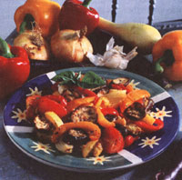

Natural Kitchen
Mother's Kitchen
Don't let its peculiar name desuade you. Fall's purple beauty is versatile, full of fiber and delicious.
When I spot a beautiful purple eggplant in the garden, glistening with dew and ready for picking, I occasionally recall a memorable eggplant moment. I remember sitting in an outdoor Greek cafe on the Mediterranean, dining on Greek-style eggplant and lamb. Or the time my husband and I munched on grilled eggplant sandwiches as we toured Rome on foot. Eggplant seemed to taste even more delicious on foreign soil. But for now I'm standing in the midst of our Chicago garden next to numerous eggplants that must be picked and prepared.
It's the preparation part that scares some people away from eggplant (not to mention a somewhat challenging name). After all, it isn't the type of vegetable that one could pick and eat raw or pop into the freezer. It's best eaten freshly prepared, preferably in season but also occasionally during the winter months. Although eggplant isn't high in any single nutrient, it contains lots of fiber that makes it very filling and gives a "meaty" texture to vegetarian dishes. By itself eggplant is low in fat and contains few calories. The reason it has such a greasy reputation is because frying it results in the porous eggplant soaking up the oil like a sponge. Lower-in-fat options would be grilling or broiling, baking, steaming, or simmering in sauces. But eggplant hasn't always been so edible. Centuries ago it was shunned because it was believed that consuming eggplant would cause temporary insanity. When my husband discovered this fun fact, he decided to attribute my bizarre personality traits to my frequent eggplant feasts.
There are numerous summer varieties to choose from. The dark purple globular is the most common variety sold. The Japanese eggplant is purple or white with its shape similar to a small zucchini. The Chinese eggplant is the same shape but is a light violet color. There is also the round or oval Italian (Rosa Biancos) eggplant that is white or purple in color. Rumor has it that the small oval white eggplant (which resembled eggs) were how the eggplant got its name.
Choose shiny firm eggplants that are free of bruises or tan patches that indicate decay. If you press the skin with your thumb, the indentation will spring back if it's fresh. A good eggplant should feel fairly heavy; a light one may be tough. Small eggplants have thinner skins, fewer seeds, and tend to be sweeter and more tender. Larger ones work well for dishes that require peeled or sliced eggplant. You can store eggplant at room temperature for a few days or it can be refrigerated for a week or so.
There's been some talk lately of how to determine the sex of an eggplant by the quantity of seeds. (Do we care?) This is a fallacy because the eggplant is self-pollinating, meaning it has both male and female characteristics and can reproduce on its own.
If the eggplant is large, you may want to peel off the skin, which might be tough. Otherwise peeling is a matter of personal preference. Many recipes call for salting the eggplant and letting it sit for about half an hour before cooking. This step draws out some of the water, consequently producing a denser texture so it will absorb less fat. The salt also draws out some of the toxic solanine that's present in some nightshade vegetables. If you do salt the eggplant, make sure you rinse it under cold water and pat dry before cooking. Unlike many vegetables, eggplant is not really harmed by overcooking, whereas under cooking results in a chewy, bitter flavor.
Broiling or grilling can be used instead of frying when preparing dishes such as eggplant parmigiana. Charcoal grilled eggplant can also accompany your barbecue meal. Cut the eggplant into 1/2-inch slices and brush with olive oil, garlic, and herbs. Broil about 5 inches from the heat for about 5 minutes per side.
Roasting: Like roasted red peppers, roasted eggplant has a smoky flavor that tastes great in dips or salads. Cut the eggplant in half lengthwise and place cut side down on a foil-lined baking sheet. Broil about 5 minutes until blistered and blackened. Place in a paper bag for 5 minutes to loosen the skin for easier peeling.
Baking: Cut the eggplant lengthwise and brush with olive oil. Place the halves cut side up on a cookie sheet. Bake a standard eggplant for 20-30 minutes at 400°F. The flesh can be scooped out to puree or to make a stuffing to put back in the shells. Eggplant can also be cut into cubes and placed on a foil-lined cookie sheet to bake for about 20 minutes.
Steaming: Eggplant can be cubed and cooked in a vegetable steamer until tender. I prefer this method to microwaving, which makes it too mushy.
Eggplant Sandwiches
Eggplant sandwiches make excellent party appetizers or picnic food. They can be eaten hot or cold.
4 slices plain whole wheat bread
1 large eggplant
2 large cloves garlic-peeled
1/2 cup fresh parsley leaves
5-6 fresh basil leaves (or 1 teaspoon dried basil)
a sprig of fresh oregano (or 1/2 -1 teaspoon dried oregano)
freshly ground pepper
a pinch of cayenne pepper
2 eggs
2 teaspoons extra virgin olive oil
1/2 pound provolone (or any strong white cheese)-sliced thin
Line a cookie sheet with foil. Lay out the bread so it can dry out for an hour or so. Slice the eggplant into 1/4 inch circles, making sure the slices aren't any thicker or the eggplant won't bake thoroughly. Salt the slices on both sides and lay them in a colander to drain for at least 30 minutes.
Preheat oven to 350°F. In a food processor, mince the garlic, parsley, peppers, and fresh herbs. Pour into a shallow bowl. Then pulse the bread into bread crumbs (about 2 cups). Stir into the herb mixture. In the processor, blend the egg and olive oil. Pour into a separate shallow bowl.
Dry off the eggplant slices. Cut cheese to fit, and place 1 slice between 2 eggplant slices. Dip the sandwich into the egg mixture, then the bread crumb mixture. You may have to pat the bread crumbs down on the eggplant so they'll stick. Place the sandwiches on a greased cookie sheet. Bake for about 30-40 minutes until t he eggplant is done.
Roasted Ratatouille
Authentic ratatouille (a vegetable stew) has always seemed too mushy to be appealing to me, so I roast the ratatouille vegetables and herbs.
4 medium Chinese or Japanese (small and thin) eggplants-cut into 1/2-inch circles
1/2 teaspoon salt
2 medium summer squash or yellow zucchini-cut into 1/2-inch pieces
1 medium sweet red pepper and
1 medium sweet yellow pepper-both seeded and cut into 1/2-inch strips
2 small yellow onions peeled and quartered
6-8 large cloves garlic-peeled and finely chopped
1 teaspoon each: dried oregano, dried basil, thyme
1/4 teaspoon salt
1/4 teaspoon cayenne pepper
freshly ground pepper
2 tablespoons extra virgin olive oil
4 Italian plum tomatoes-tops cut off and halved
optional: fresh herbs and balsamic vinegar
Thirty minutes prior to cooking: Put the sliced eggplant in a colander in the sink. Sprinkle the eggplant with salt and toss with your hands. Let sit at least 30 minutes, then pat the eggplant dry with a paper towel. Preheat oven to 475°F.
Line a cookie sheet, jelly roll pan or similar baking tray with foil. In a large mixing bowl, toss all the ingredients (except the tomatoes) together like a salad. Arrange on the cookie sheet in a single, even layer. Place the tomato halves on top.
Bake for 30-35 minutes until the vegetables are tender but not mushy. After 20 minutes flip the vegetables over. Serve hot or at room temperature, topped with chopped fresh garden herbs or parsley and a splash of balsamic vinegar.
1 pound eggplant-cut in 1/2 crosswise
1 tablespoon sesame or peanut oil
3 large cloves garlic-minced
2 teaspoons fresh ginger root-peeled and grated
1 tablespoon red wine vinegar (or rice wine vinegar)
1 tablespoon dry sherry 2 teaspoons sugar
2 green onions-minced
1 tablespoon sesame seeds-toasted
2 green onions-minced
2 tablespoons cilantro-chopped
chili oil
optional: mixed lettuce leaves
Put a vegetable steamer in a large covered pot with 1 inch of water. Simmer the eggplant for 20-25 minutes until slightly shriveled. Let cool at least 10 minutes. In a small pan sauté the garlic and ginger in the oil for about 30 seconds. Add the vinegar, sherry, and sugar and heat until it starts to boil. Set aside. Peel the eggplant but take care not to pull the pulp off with it. Cut the skin off the tough ends of the eggplant and start peeling it lengthwise into long strips about 1/2 inch wide. Put the eggplant in a bowl, add the green onions and the sesame seeds. Pour the sauce over it and toss. Top with cilantro and add chili oil to taste. Serve on top of a handful of mixed greens.
3-4 small Japanese eggplants (about 2 cups)-cut into thin circles (other eggplants can be substituted)
1 teaspoon salt
1 pound skinless, boned chicken breast, partially frozen-sliced into thin strips
1 teaspoon peanut or sesame oil
2 large cloves garlic-minced
6 green onions green tops cut off and cut diagonally into 1 1/2 inch pieces
1/4 - 1/3 cup unsalted chicken broth
1 1/2 cups mushrooms-sliced thin
1/3 cup apple cider
1 8-ounce can bamboo shoots-rinsed and drained
1/4 cup tamari soy sauce-whisked together with 1 tablespoon sugar
2 cups fresh spinach leaves (packed)-cut into 1/2 inch strips
thin noodles or brown rice
In a medium saucepan, boil about 3 cups water with the salt. Turn off the heat and drop the sliced eggplant into the water. Let sit 5 minutes and then drain well in a colander. On medium-high heat, heat up the oil in a wok or large skillet. (I use a nonstick pan.) Sauté the chicken pieces until browned. Stir in the garlic and onions until slightly browned. Remove chicken from pan, pour into a bowl, and set aside. Sauté the eggplant on medium-high heat 2-3 minutes until tender but not mushy, stirring occasionally. If the eggplant begins to stick, add some chicken broth, a little at a time. Add the mushrooms and sauté for about 2 minutes until they begin to wilt. Stir in the bamboo shoots and the rest of the ingredients except the spinach. Reduce heat to medium and simmer a few minutes while preparing the noodles. Stir in the spinach and simmer for about a minute just before serving.
Not Always a Favorite
Centuries ago, eggplant was shunned because it was believed to cause insanity.
|
|
 |
|